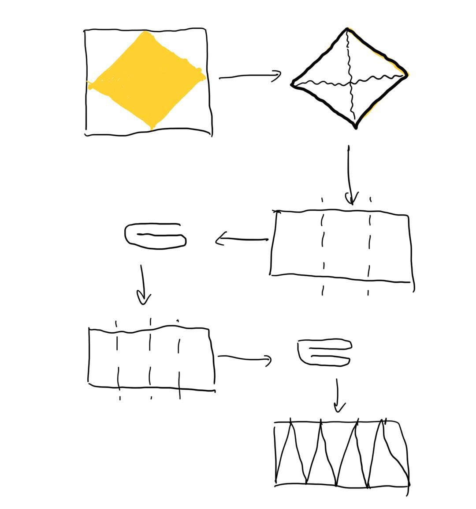
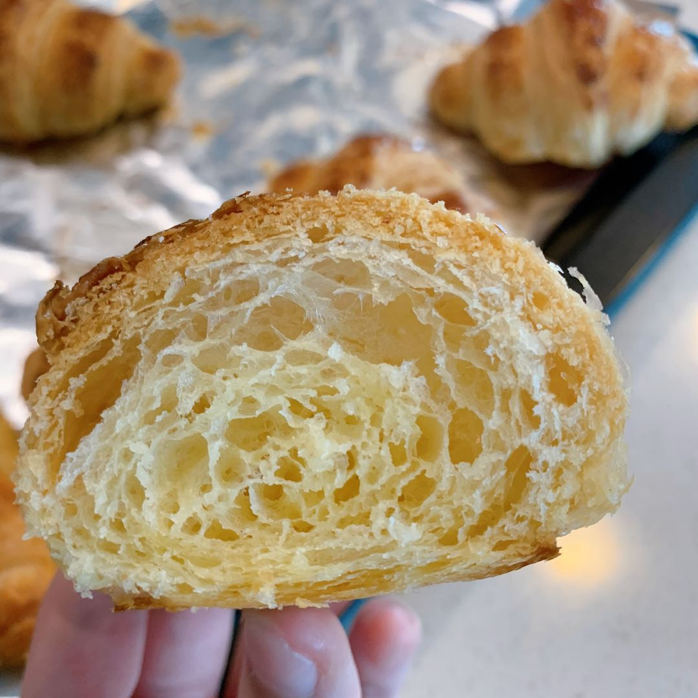

- Water 155g
- Yeast 2g
- Flour 330g
- Sugar 20g
- Salt 4g
- Olive oil 20g
- Butter 180g
Ingredients
- Mix every ingredients (except butter) together and knead till smooth.
- Cover and rest for 3 hours before transferring into the fridge and chill overnight.
- In the morning, slice the butter into equal parts and put it in a ziploc bag.
- Roll the butter out to a square. Refrigerate for 30 minutes or until the butter hardens.
- Take the dough out and roll it to a square, big enough to fit the butter.
- Place the butter slab 45 degrees relative to the square.
- Fold the dough in to cover the butter, pinch the sides.
- Rest in fridge for 30 minutes.
- Roll the dough out to a long rectangle and perform the "3 fold".
- Rest in fridge for 1 hour.
- Roll the dough out to a long rectangle and perform the "4 fold".
- Rest in fridge for 1 hour.
- Roll out to a thin rectangular sheet, mark out where to cut, and cut the dough into isosceles triangles.
- Roll the triangles and place them on a baking sheet.
- Brush on some egg wash (1 beaten egg) and let rise for 2 hours in room temp.
- Brush on another coat of egg wash before putting them in the oven.
- Bake at 220℃ for 10 miuntes and 190℃ for 14-17 minutes.
- 
Process
Things to read before you start making this recipe
Keep the dough COOL
Practice makes perfect.
